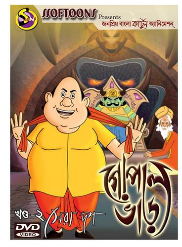
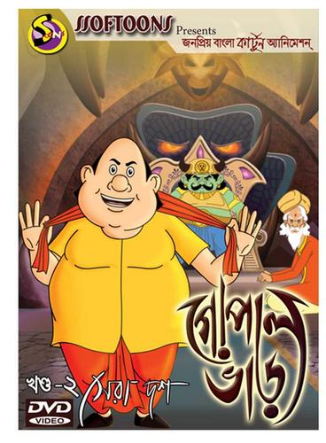

WELCOME TO MORIUM'S BLOG
Morium Naima
mariumnaima860@gmail.comor
morium15-14190@diu.edu.bdMorium Naima
mariumnaima860@gmail.comor
morium15-14190@diu.edu.bd 


My name is Morium Naima. I live in the capital city of my country and my home district is Cumilla. Currently, i am studying in Daffodil International University (DIU), Department of Computer Science and Engineering(CSE). Some of my favorite things to do are read, listen to music, and ride public transportation (buses and trains). These are activities that I enjoy immensely and indulge in daily. My career aspirations are to become a software engineer in a renowned multi-national company. I have been told that I am a charming, kind, attitude-prone person. I look up mostly to my family members, especially my parents, as a guiding figure in my life. Favorite shows of mine include: Friends, Gopalvar,Dark, Squid Games etc.
| Dhaka | Cumilla |
|---|---|
| Chillox (Resturant) | Cup's and Hotbite (Resturant) |
| Bangladesh National Museum | Shalbon Bihar |
| Puran Dhaka | DSP |